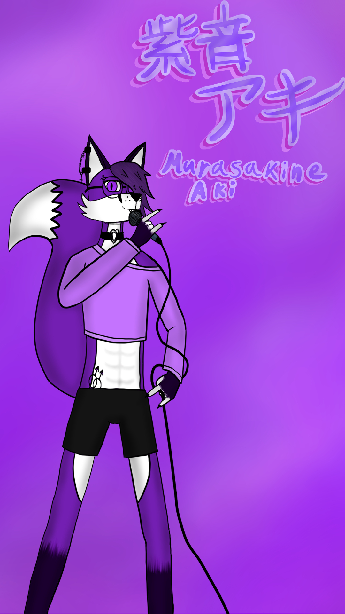

Мурасакине Аки
Мурасакине Аки-антропоморфный фиолетовый лис, похотливый но стеснительный парень лет 19. Он очень обожает онигири, его рост 171 см, носит кроптоп нежно-розового цвета, чёрные спортивные шорты, пирсинг на ухе и брови и круклые очки с чёрной оправой, носит длиную чёлку. В низу живота татуировка в виде гей символа, на плече под кроптопом скрывается татуировка в виде цепи со звеньями в виде сердец.
Характеристика записи голоса:
- Высокий вокал
- Поёт на японском
- Чистая запись
Записан в формате WAV